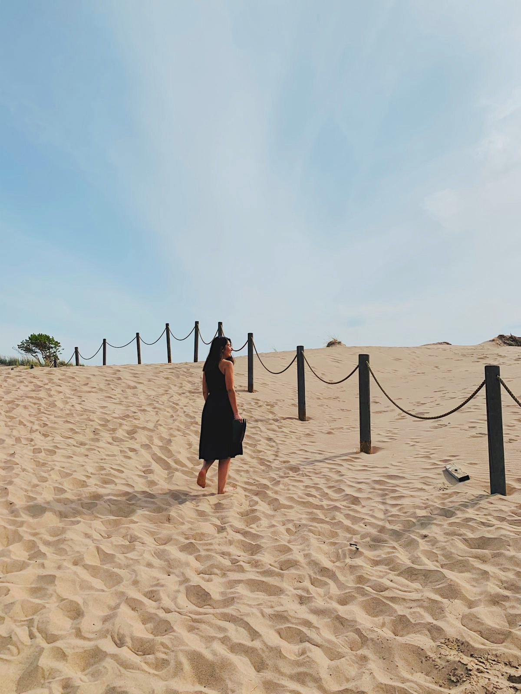

Minusta
Olen intohimoinen ruoanlaittaja, ja kokkailu on minulle enemmän kuin pelkkä harrastus. Rakastan kokeilla uusia reseptejä, sekoittaa mausteita ja loihtia herkullisia aterioita. Tämä intohimo on kulkenut mukanani pitkään, ja se on kasvanut vuosien varrella. Kokkailu on minulle tapa ilmaista luovuuttani ja huolehtia itsestäni ja läheisistäni. Kun saan valmistaa ruokaa, tunnen olevani osa jotain suurempaa – perinnettä, kulttuuria ja yhteisöä. Se on kuin taikaa: raaka-aineista syntyy jotain herkullista ja ravitsevaa. Intohimoni kokkailua kohtaan näkyy myös siinä, että opiskelen jatkuvasti uutta. Tutkin eri keittiöiden tekniikoita, opettelen uusia reseptejä ja seuraan ruokatrendejä. Haluan yllättää itseni ja läheiseni maukkailla aterioilla, ja siksi teen parhaani oppiakseni jatkuvasti lisää.
Ota yhteyttä: sähköposti@example.com